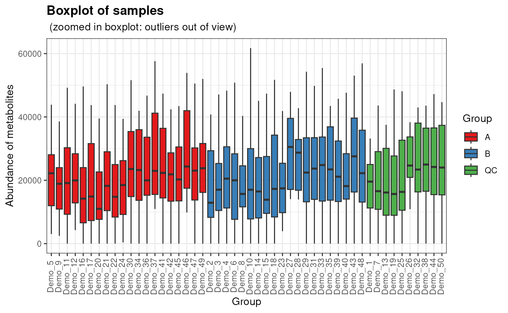
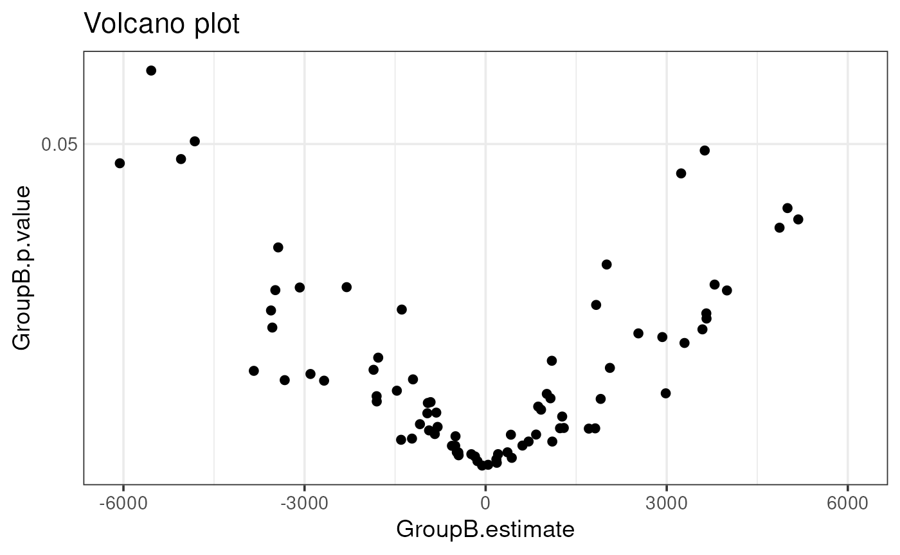
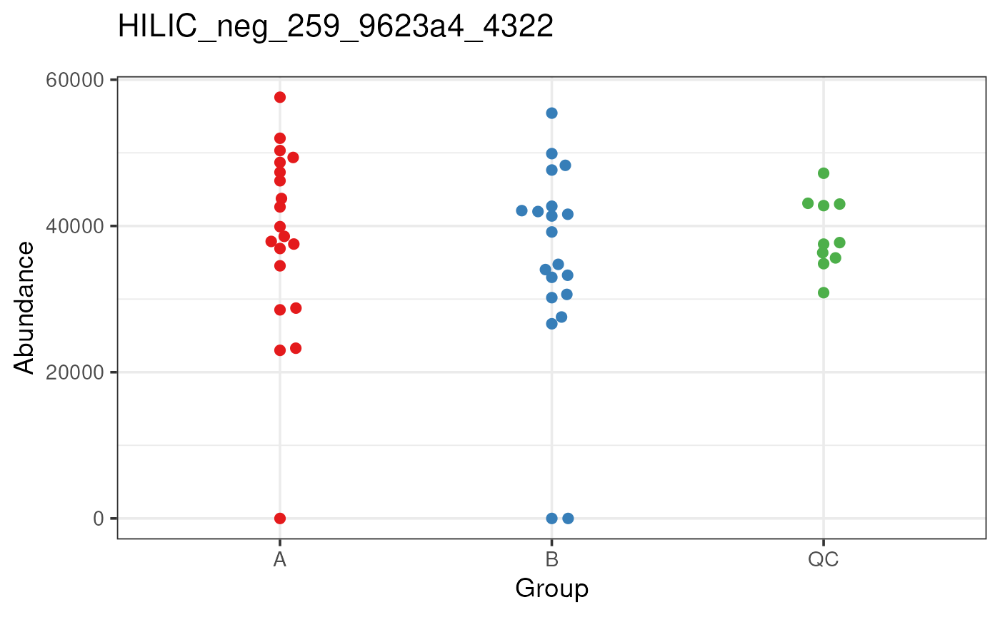

Non-targeted metabolomics visualization
Anton Klåvus, Vilhelm Suksi
2025-10-24
Source:vignettes/articles/Non_targeted_metabolomics_visualization.Rmd
Non_targeted_metabolomics_visualization.RmdThe visualizations in notameViz can be used to monitor
the processing and explore the data, inspect individual features as well
as plot results. Please see the notame website and
protocol article for more information (Klåvus et al. 2020). Similar functionality
is available in miaViz and scater
packages.
Installation
To install notameViz, install BiocManager
first, if it is not installed. Afterwards use the install
function from BiocManager and load
notameViz.
if (!requireNamespace("BiocManager", quietly = TRUE))
install.packages("BiocManager")
BiocManager::install("notameViz")
library(notame)
library(notameViz)
library(notameStats)
ppath <- tempdir()
init_log(log_file = file.path(ppath, "log.txt"))## INFO [2025-10-24 10:42:38] Starting loggingPreprocessing visualizations
Preprocessing visualizations are used to monitor preprocessing such as drift correction and explore the data. Preprocessing visualizations return ggplot2 objects. Preprocessing is performed separately for each mode.
plot_sample_boxplots(hilic_neg_sample, order_by = "Group", fill_by = "Group")
The function save_QC_plots conveniently saves common
visualizations after each round of processing, ignoring flagged features
by default. You can see this in action in the project example vignette
in the notame package. It also allows you to merge all saved plots into
one file by setting merge = TRUE. NOTE that this requires
you to install external tools. For Windows, install pdftk.
For linux, make sure pdfunite is installed.
Results visualizations
Results visualizations return ggplot2 objects. Common visalizations
include effect heatmaps and volcano plots. Manhattan plots and cloud
plots can be used to relate results to biochemical features such as m/z
and RT and are plotted separately for each mode. To save these functions
to a PDF file, use save_plot.
lm_results <- notameStats::perform_lm(notame::drop_qcs(toy_notame_set),
formula_char = "Feature ~ Group")## INFO [2025-10-24 10:42:39] Starting linear regression.
## INFO [2025-10-24 10:42:41] Linear regression performed.
with_results <- notame::join_rowData(toy_notame_set, lm_results)
p <- volcano_plot(with_results,
x = "GroupB.estimate", p = "GroupB.p.value", p_fdr = "GroupB.p.value_FDR")## Warning: None of the FDR-adjusted p-values are below the significance level,
## not plotting the horizontal line.
# save_plot(p, file = "volcano_plot.pdf")
p 
Feature-wise visualizations
The following visualizations are applied to each feature and directly
saved to a PDF file, one page per feature. If save = FALSE,
a list of plots is returned:
beeswarm_list <- save_beeswarm_plots(toy_notame_set[1:10],
save = FALSE, x = "Group", color = "Group")## Just a remainder, creating a long list of plots takes a lot of memory!
beeswarm_list[[1]]
Color scales
Color scales and other scales can be set separately for each function
call, and the defaults are set as options in the package. The scales are
ggplot scales, returned by e.g. scale_color_x. It is also
possible to change the scales globally for the complete project. To do
this, use e.g.
options("notame.color_scale_dis") <- scale_color_brewer(palette = "Dark2").
Below is a list of all the scales used in the package and their default
values (con = continuous, dis = discrete, div = diverging):
notame.color_scale_con = ggplot2::scale_color_viridis_c()notame.color_scale_dis = ggplot2::scale_color_brewer(palette = "Set1")notame.fill_scale_con = ggplot2::scale_fill_viridis_c()notame.fill_scale_dis = ggplot2::scale_fill_brewer(palette = "Set1")notame.fill_scale_div = ggplot2::scale_fill_distiller(palette = "RdBu")notame.shape_scale = ggplot2::scale_shape_manual(values = c(16, 17, 15, 3, 7, 8, 11, 13))
Session information
## R version 4.5.1 (2025-06-13)
## Platform: x86_64-pc-linux-gnu
## Running under: Ubuntu 24.04.3 LTS
##
## Matrix products: default
## BLAS: /usr/lib/x86_64-linux-gnu/openblas-pthread/libblas.so.3
## LAPACK: /usr/lib/x86_64-linux-gnu/openblas-pthread/libopenblasp-r0.3.26.so; LAPACK version 3.12.0
##
## locale:
## [1] LC_CTYPE=en_US.UTF-8 LC_NUMERIC=C
## [3] LC_TIME=en_US.UTF-8 LC_COLLATE=en_US.UTF-8
## [5] LC_MONETARY=en_US.UTF-8 LC_MESSAGES=en_US.UTF-8
## [7] LC_PAPER=en_US.UTF-8 LC_NAME=C
## [9] LC_ADDRESS=C LC_TELEPHONE=C
## [11] LC_MEASUREMENT=en_US.UTF-8 LC_IDENTIFICATION=C
##
## time zone: UTC
## tzcode source: system (glibc)
##
## attached base packages:
## [1] stats4 stats graphics grDevices utils datasets methods
## [8] base
##
## other attached packages:
## [1] notameStats_0.99.1 notameViz_0.99.5
## [3] notame_0.99.8 SummarizedExperiment_1.39.2
## [5] Biobase_2.69.1 GenomicRanges_1.61.5
## [7] Seqinfo_0.99.2 IRanges_2.43.5
## [9] S4Vectors_0.47.4 BiocGenerics_0.55.4
## [11] generics_0.1.4 MatrixGenerics_1.21.0
## [13] matrixStats_1.5.0 ggplot2_4.0.0
## [15] BiocStyle_2.37.1
##
## loaded via a namespace (and not attached):
## [1] beeswarm_0.4.0 gtable_0.3.6 xfun_0.53
## [4] bslib_0.9.0 htmlwidgets_1.6.4 lattice_0.22-7
## [7] vctrs_0.6.5 tools_4.5.1 parallel_4.5.1
## [10] tibble_3.3.0 pkgconfig_2.0.3 Matrix_1.7-4
## [13] RColorBrewer_1.1-3 S7_0.2.0 desc_1.4.3
## [16] lifecycle_1.0.4 stringr_1.5.2 compiler_4.5.1
## [19] farver_2.1.2 textshaping_1.0.4 codetools_0.2-20
## [22] vipor_0.4.7 htmltools_0.5.8.1 sass_0.4.10
## [25] yaml_2.3.10 pillar_1.11.1 pkgdown_2.1.3
## [28] crayon_1.5.3 jquerylib_0.1.4 tidyr_1.3.1
## [31] BiocParallel_1.43.4 cachem_1.1.0 DelayedArray_0.35.3
## [34] abind_1.4-8 tidyselect_1.2.1 digest_0.6.37
## [37] stringi_1.8.7 dplyr_1.1.4 purrr_1.1.0
## [40] bookdown_0.45 labeling_0.4.3 fastmap_1.2.0
## [43] grid_4.5.1 cli_3.6.5 SparseArray_1.9.1
## [46] magrittr_2.0.4 S4Arrays_1.9.1 withr_3.0.2
## [49] scales_1.4.0 ggbeeswarm_0.7.2 rmarkdown_2.30
## [52] lambda.r_1.2.4 XVector_0.49.1 futile.logger_1.4.3
## [55] ragg_1.5.0 evaluate_1.0.5 knitr_1.50
## [58] viridisLite_0.4.2 rlang_1.1.6 futile.options_1.0.1
## [61] glue_1.8.0 BiocManager_1.30.26 formatR_1.14
## [64] jsonlite_2.0.0 R6_2.6.1 systemfonts_1.3.1
## [67] fs_1.6.6